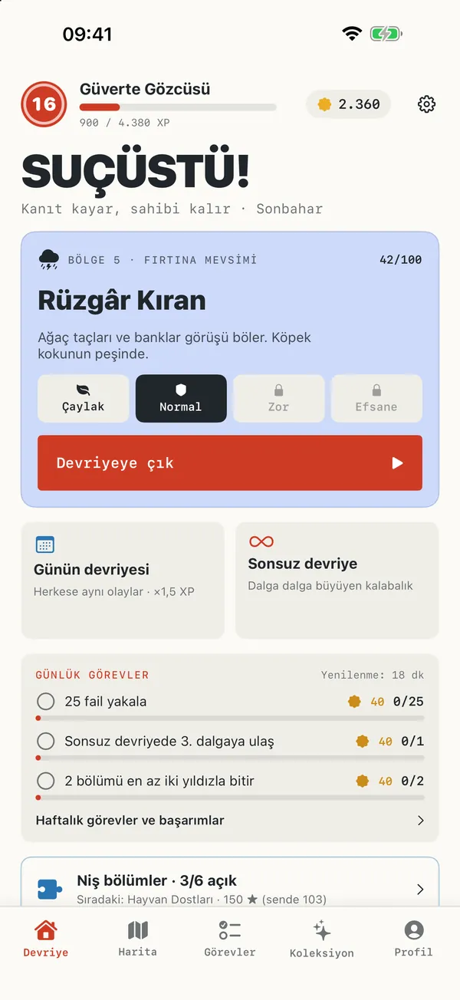
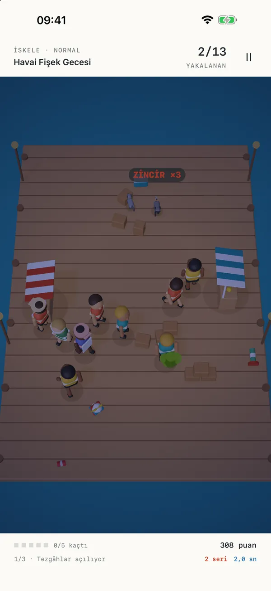
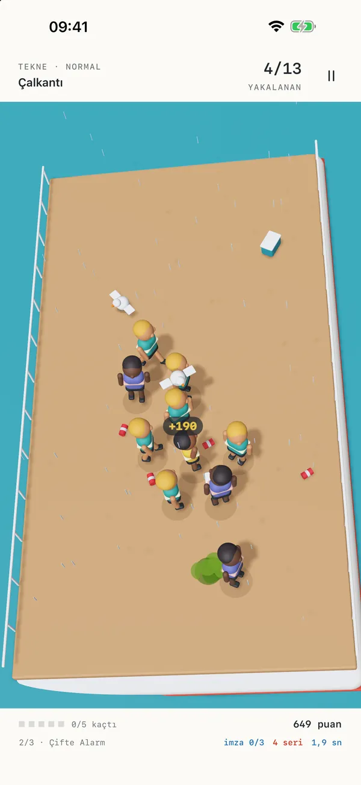
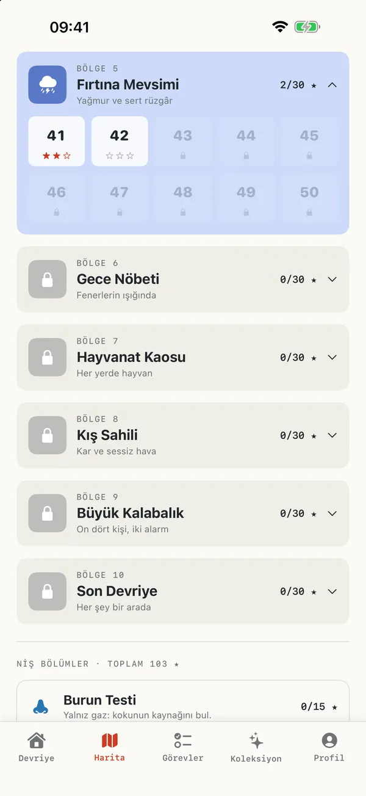
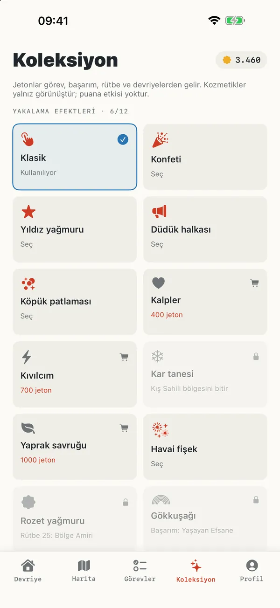

OYUN · iPHONE · 3D
SUÇÜSTÜ!
Kanıtı izle, faili yakala
Gaz bulutu rüzgârla sürüklenir, köpek atılan şişeyi kapıp başkasının yanına bırakır, tekmelenen top kasaları devirir. Kanıt yer değiştirir ama sahibi değişmez. Oyuncak görünümlü üç boyutlu bir sahilde gerçek faili bul ve ona dokun.
Şu an TestFlight'ta test ediliyor. Henüz App Store'da değil; yayımlandığında indirme bağlantısı burada olacak.
01 · NASIL OYNANIR
Tek dokunuş, fizik dolu bir sahil
KANIT YER DEĞİŞTİRİR
Rüzgâr kokuyu taşır, martı bardağı kapar, köpek şişeyi getirir. Derinlik kontrollerden değil, her koşuda farklı gelişen fiziksel olaylardan gelir.
ADİL VE AÇIK
Karar süresi her bölümün brifinginde yazar. Masuma dokunmak puan kaybettirir; hayvana ya da kuma dokunmak cezasızdır.
DÖRT ZORLUK KADEMESİ
Çaylak, Normal, Zor ve Efsane. Her kademenin yıldızları ve ustalık rozetleri ayrı.
NİŞ BÖLÜMLER
Yalnız gaz, sisli görüş, kanıtı taşıyan hayvanlar, ikiz alarmlar, şimşek turları: tek bir kuralı uca taşıyan özel bölümler.
HER GÜN YENİ
Günün devriyesi herkese aynı bölümü verir. Seri zorunluluğu ya da ceza yok. Sonsuz devriyede kendi rekorunu kovala.
KARİYER
Stajyer'den Efsane Komiser'e 50 rütbe. Jetonla yalnız görsel efekt ve kart teması alınır; oyun avantajı satılmaz.
02 · BÖLGELER
Sakin Sahil'den Son Devriye'ye
- Sakin Sahil
- Festival Haftası
- Liman Kasabası
- Fırtına Mevsimi
- Gece Nöbeti
- Hayvanat Kaosu
- Kış Sahili
- Büyük Kalabalık
- Son Devriye
On bölgenin bazıları. Yağmur, kar, sis ve fener ışığında gece devriyeleri de var.
03 · EKRANLAR
Oyundan kareler






04 · YAPIM NOTLARI
Nasıl yapıldı?
Oyun ilk önce SpriteKit ile iki boyutlu, kuş bakışı bir deniz oyunu olarak doğdu. Sonra aynı fikri RealityKit ile üç boyuta taşıdım: kişiler, çöpler ve toplar gerçek fizikle hareket ediyor; gaz bulutunun görüntüsü ile oyunu belirleyen koku alanı birbirinden ayrı. Köpek kokuyu izliyor, kedi köpekten kaçıyor, güvercin seste havalanıyor. Sesler kayıt değil, programla üretiliyor; her ses türünün altı çeşidi var, aynısı art arda çalmıyor.
Geliştirici: Ali Emre Büyükkol.
05 · DESTEK
Yardım ve gizlilik
Giriş gerekmez; ilerlemen ve ayarların cihazında kalır. Oyunda Google AdMob reklamları var: ilk üç bölümde reklam çıkmaz, açılışta reklam izni sorulur, uygulama izleme izni istenmez. Tek seferlik "Reklamları kaldır" satın alması reklamları kalıcı olarak kapatır.